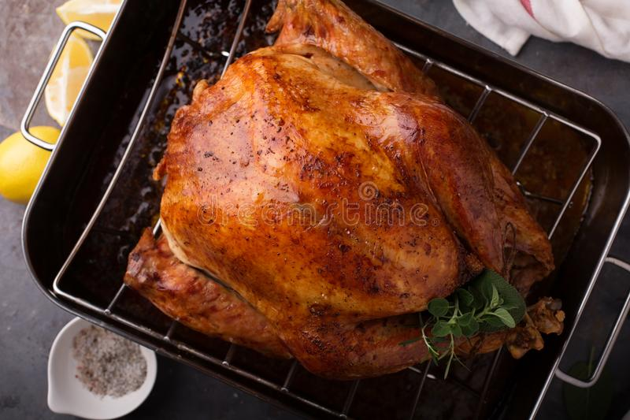

Turkey

Description
How to cook a perfectly roasted turkey this holiday season.
Ingredients
Roast Turkey
- 12 pound whole turkey
- 3 heads of garlic
- 3 lemon slices
- 6 sprigs thyme
- 6 sprigs rosemary
- 1/2 cup olive oil
Herb Butter
- 4 ounces unsalted butter
- 1 teaspoon chopped thyme
- 4 teaspoons minced garlic
- Salt
Steps
- Preheat oven to 425°F | 220°C for standard ovens, or 390°F | 200°C for fan forced. Lower oven shelf to the lowest part of your oven
- Combine the Herb Butter ingredients in a bowl and mix well. Reserve half of the herb butter in the refrigerator for later
- Line a large roasting pan with foil or parchment paper. Arrange the 4 halves of garlic cut-side down on the bottom of the pan with 4 sprigs each of thyme and rosemary, half of the olive oil and 1 slice of lemon.
- Thoroughly pat turkey dry with paper towels. Stuff with the remaining heads garlic halves, lemon slice, a squeeze of lemon from remaining slice, herbs and a drizzle of olive oil.
- Melt the butter and rub all over the turkey, including under the skin. Season generously all over with salt and pepper. Place turkey on top of the garlic and herbs in the pan BREAST-SIDE DOWN. Drizzle with the remaining oil
- Roast uncovered for 30 minutes for a small turkey under 13 pounds (6 1/2 kg), or 45 minutes for a larger turkey over 14 pounds (7 kg plus).
- Turn turkey over (breast-side up) with a pair of tongs, a clean tea towel or oven mits (heat-proof gloves) and baste with pan juices.
- Spread half of the reserved herb butter over the top of your turkey with a spoon or brush (be careful, the turkey will be hot and the butter will melt nicely over the skin). Pour any remaining juices over your turkey.
- Reduce heat to 325°F |165°C (for standard ovens), or 300°F | 150°C (fan-forced). Roast, uncovered, for an hour.
- Slather turkey generously with remaining butter and roast for 30 minutes. Baste again, then continue roasting for a further 30 minutes or so, depending on the size of your bird. *Tent loosely with foil if starting to brown too fast.
- For extra crispy skin, broil (or grill) in the last 5-10 minutes, keeping your eye on it so it doesn't burn, until the skin is crispy and golden browned all over.
- Tent turkey with foil and allow it to rest for 20-30 minutes before carving and serving.